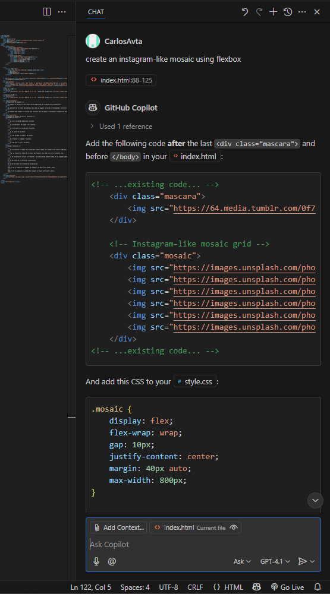
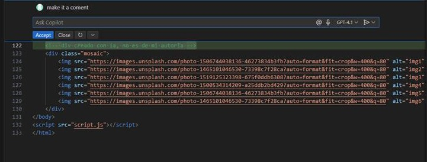

Mosaico hecho con ia


El viewport se refiere al área visible de una pagina web en la pantalla de un dispositivo.
Es importante en el diseño web adaptable para que las paginas se ajusten correctamente a diferentes tamaños de pantalla, ya sean dispositivos moviles o computadoras de escritorio.
La etiqueta meta viewport se utiliza para controlar como se adapta el contenido al viewport del dispositivo.
Primero añadimos la extension de GitHub Copilot dentro de Visual Studio Code
Despues simplemente abrimos la ventana de chat con Copilot y le damos un prompt para que nos genere el codigo que queremos o que nos ayude a corregir parte del codigo que le indiquemos

Y listo Copilot nos dara un codigo nuevo que con un simple clic se añade al archivo
GitHub Copilot tambien puede modificar lineas de codigo, te ayuda a corregir errores o hacer tu codigo en menos lineas
